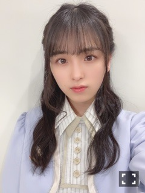

2021/0904Sat9月4日。
3期生5周年、おめでとう、！
大切な日に、
思い出ファーストのMVが
公開されました～

3期生の大好きな曲。
卒業前にMV撮影できたら幸せです、
と、お願いして。
わがままを叶えて頂きました。
撮影日が決まると、みんなで
楽しみだね、泣いちゃうねと話す
毎日がとても嬉しかったのです。
明日楽しもう！！と気合を入れて
眠ると、朝起きてなぜか胃が痛くて
撮影にご迷惑をかけてしまったりも
しましたが...
とても幸せな1日を過ごしました。
本当に楽しかったなぁ、
素敵な夏の思い出。
そして今日、私は乃木坂46としての
最後の日を過ごしました。
穏やかな気持ちで
卒業を迎えられたこと、
乃木坂を大好きになれたこと
よかったなと安心しています。
この5年間、
幸せが沢山ありました。
出会えてよかったなと
思える人が沢山います。

皆様、本当にありがとうございました。
大園桃子
2021/09/04 21:30｜個別ページ｜コメント(1315)
2021/0704Sun皆様へ
こんばんは。
突然ですが、
ご報告をさせて下さい。
今回の27枚目シングルの活動を
もちまして乃木坂46を卒業します。
3期生として乃木坂に加入して、
優しさに触れ、幸せで、嬉しくて、
乃木坂に入っていなければこんな素敵な
瞬間を味わうことはできなかっただろうな
ということも沢山。
毎日泣いて、光が見えなくて
乃木坂に入っていなければこんなに
辛くて怖い思いをしないですんだのにな
ということも沢山。
どちらの感情も
味わった約5年間でした。
二つの感情が短い期間で
慌ただしく入れ替わる私は、
乃木坂にいる事が幸せです！
乃木坂がだいすきです。
と心からはっきりと言える日がくるのか
周りのメンバーがそう発言する度に
とても羨ましく思っていました。
でもそんな私でも
応援してくださった皆様
優しくて、温かい先輩方
私を認めてくれた3期生
こんな私を好きだと言ってくれた4期生
見捨てないで、包み込んで下さった
マネージャーさん。
沢山守ってもらえて、
助けてもらえたからこそ、
ここまで乃木坂の一員でいる事が
できたみたいです。
約5年間を
今、思い返すと
乃木坂に入って出会った
大好きな人が沢山いるから、
乃木坂にいることができて
幸せだったな。といつのまにか、
そう思えるようになってきています。
頂いたいろいろな形の
沢山の優しさを思い返しては
涙が出そうです。
先輩や3期生、ファンの方々が
言ってくださる
そのままの桃子がいいんだよ。
という優しい言葉が
頑張る事ができない時の私には
とてもとても助けになりました。
約5年間本当にありがとうございました。
少し前に開催された、5月9日の
3期生単独ライブは4年ぶりでしたね。
12人が3期生として乃木坂に加入して
全く見知らぬ人達なのに、
この瞬間から仲間です！
時には良きライバルとして
みんなで頑張りましょう！って...
不思議な環境に私は長い間
ずっと馴染めずにいました。
仲間ではあるけれど
競争させられる環境に居るから
それぞれの立場に辛い思いがあって
その立場にいないと気持ちを
分かってあげる事ができなくて。
仲良しでいられない時もありました。
でも誰1人かけることなく
ゆっくりと時間をかけて
みんなの性格を知って、
好きになって、認め合えて、
大切に想いあって
かけがえのない12人になりました。
苦手な事が多く、
すぐ諦めてしまう私を
引っ張り上げてくれて、少しのことでも
褒めてくれて本当にありがとう。
最近は、12人で写真を撮ったり
お仕事で集まる事ができると
とても楽しくて、みんなすきー！と
愛がいっぱい溢れます。
私が乃木坂46として活動する
最後の日は、3期生12人で
5周年を迎える9月4日になります。
9月4日で芸能活動も引退します。
その日まで乃木坂46の大園桃子を
応援して頂けるととても嬉しいです。
最後に、真夏の全国ツアー2021の
参加日程です。スタッフさんと
相談中だったためお伝えが遅くなり
申し訳ございません。
＜大阪＞
7月14日(水)
7月15日(木)
＜宮城＞
7月17日(土)
7月18日(日)
＜愛知＞
8月14日(土)
8月15日(日)
＜福岡＞
8月21日(土)
8月22日(日)
ライブは8月22日の
福岡公演が最後です。
あまりダンスや位置を
覚える事が得意ではないので、
大きい不安はありますが
頑張る気持ちです！笑
皆様、一緒に楽しみましょう〜
残り少ない、あと2ヶ月間
大切に過ごします。
大園桃子
2021/07/04 00:00｜個別ページ｜コメント(5142)
2021/0226Friもう夏がくる。
暖かくなってきましたね。
暑さが本当に苦手なので、
今から先が怖いです、悲しいです...
大園桃子です。
ブログ、お久しぶりです。
書かなければと思えば思うほど
何を書こうとわからなくてですね、
こんなに期間が空いてしまいました。
ごめんなさい。
9th バースデーライブ、前夜祭
見てくださった方
ありがとうございました。
すごいですよね、9年間って。
3期生も、もう4年目で
乃木坂のお誕生日に5回もお祝いさせて
頂いているなんて、
ありがとうございます。
ふとした時、客観的に見るのです。
よく考えてみると、やっぱり自分が
乃木坂でいることが不思議なのですよね
1年ちょっと前まで毎日泣いていて、
どうしようもなく辛かったです。
でも何が嫌なのか本当に分からない
そんな時期がながくありました。
でも、優しい沢山の先輩方に
包んでもらい守ってもらって
思いとどまる。その度に、
乃木坂も悪くないなって
何度も思う事ができていたようです。
だからこそ、
ここまで乃木坂のメンバーとして
頑張る事が出来たのだなぁと思います。
そして私を私のままで良いと
受け入れて、見守ってくださる、皆様
いつもありがとうございます。

26thシングルでは、友情ピアス。
さくらちゃんとのユニットが～、！

あまり後輩の子とお話を
上手にできない事が悩みでしたので、
仲良くなりたくて沢山話しかける挑戦
をしていました。笑
私的には、ユニットを組む前より
お話できるようになった気がしています！
どうかな、さくらちゃん...(*´-`)
話しかけすぎて困らせていたらごめんね。
そしてこの曲は2人とも初挑戦、
ギターを引きながらの映像撮影でした。
沢山練習して頑張ったので多めに優しく
見てくださると嬉しいです。
皆様、なかなか眠れない時など
いかがでしょうか？、
睡魔に襲われること間違いなしです♪

またね。
2020/0913Sun2020.9.13
こんにちは。桃子です。
今日、21歳のお誕生日を迎えました～
メンバーやマネージャーさんが
昨日お祝いしてくださって、
おめでとうの連絡をくれたお友達も
沢山でとっても嬉しかったです❤︎
今年の誕生日は
なんだかとっても晴れやかです。
今までは、もっと大人にならないと
今年は元気でいられたらいいな、
ネガティブをなおしたい。
歳を重ねることにプレッシャーで
こういう感情ばかりでした。
去年、乃木坂の活動をお休みして
あの時は、お休みする事が正解か
わからなかったですが、段々と考え方が
変わっていくきっかけになりました！
今は落ち込んでも切り替える事が
できるようになって、
笑って過ごしています！
何もやりたい事がなかった私が
やりたい事や、興味のある事が増え、
調べたりするようになりました。
何かは教えられません(￣∇￣)
21歳の今年は、興味のある事を
沢山追求して、自分が楽しいと思える事を
増やしたいです。これが目標です！✨
応援してくださる皆さん、
今まで心配をかけ続けてしまいましたが
去年よりも安心して見ていてください。
今日はらじらーです！
みんな聞いてくれるかなぁ～
じゃあ、またね！
3期生4周年もおめでとうだぁ～❤︎
2020/09/13 16:42｜個別ページ｜コメント(1724)
2020/0804Tueクラッカーパーン！
おめでとう～
かわいーねーーーっ(´∀｀)
写真集前は、食事制限に運動にずっと
たくさん頑張ってて、撮影終わったら
ご褒美においしい雲丹食べに行こうねって
約束してたんだよ～
3月の初めに食べに行くことが
できました！


美味しさに苦しくなってる動画しか
残ってなかったからスクリーンショット
したものをどうぞ！
みなみんがお土産に買ってきてくれた
アロマキャンドルが本当にももこの
だいすきー！ってなる香りだったんだ❤︎
はやくみたいなーーーーーっ(｀∇´)
そして、また安全になったらみんなで
ご飯行きたいなぁ